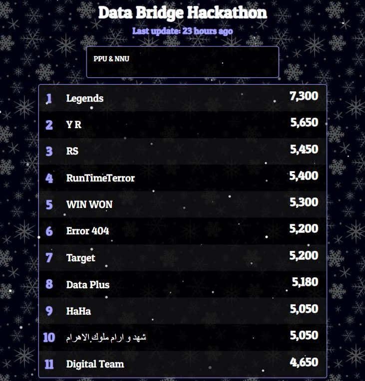
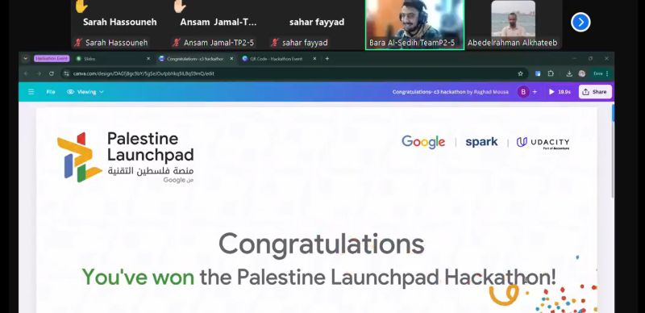
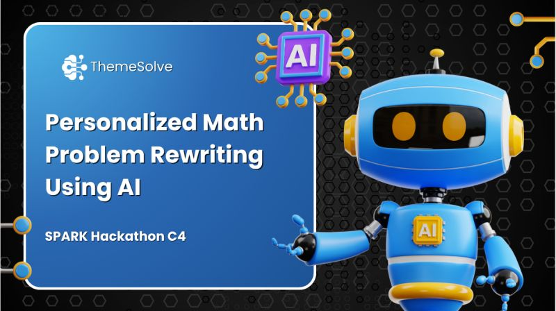
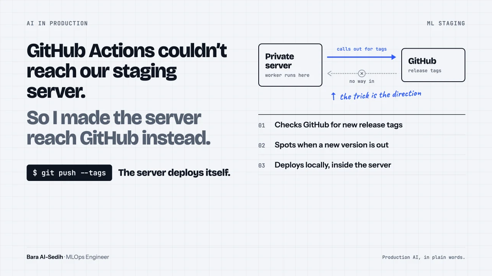
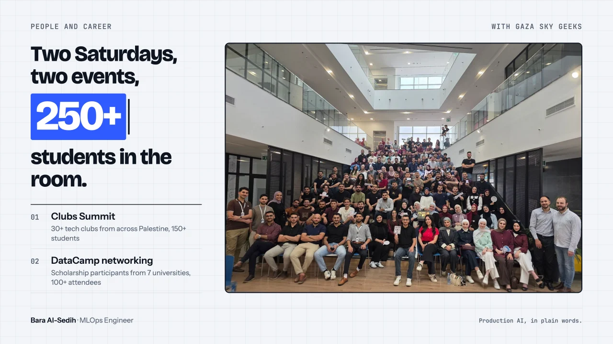
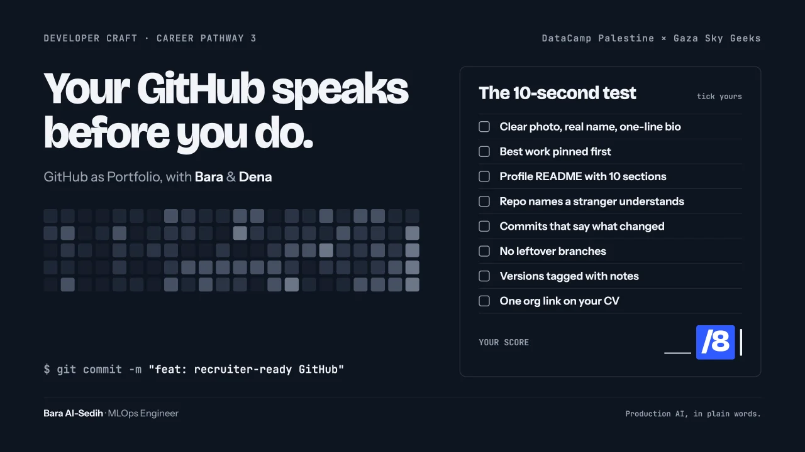
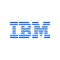
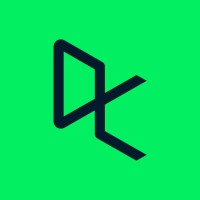

Bachelor of Computer Engineering
Two graduation projects: a tile grout filling robot, and FreeDevelopersCamp, a learning platform.
Bara Al-Sedih · MLOps Engineer · Community Builder
01 No map
The field was new in Palestine. No communities, no company trainings. I learned it the hard way: a lot of mistakes, and a lot of hours spent on the wrong choices.
02 Practice
Programs, internships, hackathons, and freelance work. One stop led to the next.
May · Oct 2024
Classification, regression, and clustering. Neural networks and hyperparameter tuning.
Jun · Aug 2024
RESTful APIs with NestJS and TypeScript.
“You picked up NestJS in no time.” Yazan Faroun
Aug 2024

Oct 2024 · Oct 2025
I joined the scholarship as a student, and spent a year learning data on DataCamp.
Jan · May 2025
Machine learning, data science, and deep learning: models in TensorFlow, Scikit-learn, and PyTorch, SQL on real data problems, and CNNs and YOLO for computer vision.
Feb 2025
1st
We built a mental health chatbot on a fine-tuned Llama model, and added Arabic conversations to the dataset.

Jun 2025 · now
I delivered an AI Agents training for a client. It turned into an ongoing product build, and two production AI agents.
03 The real thing
That’s when I promised myself I would help grow this field in Palestine.
Sep 2025 · now · MLOps Engineer · one story from the job
Push a tag. The server deploys itself.
No inbound access needed. No manual deploys.
A worker on the server checks GitHub for new release tags.
It spots when a new version is out.
It deploys locally, on the server.
Now I run AI in production. I own a large part of my team’s infrastructure, deployments, and production operations.
Outside work · Atlas AI
Atlas AI watches ML models and LLMs after they ship. It is open source, built across three repos, and covers observability, RAG, and CI/CD.
Hybrid search, cross-encoder reranking, and LLM traces sent to ClickHouse.
CodeA data pipeline, several ML/DL models with one decision layer, and a Dockerized REST API.
04 Giving back
I learned the hard way, so I make it easier for the next person. I lead, I mentor, and I write.
I lead · Gaza Sky Geeks
I was a student in the DataCamp scholarship.
Now I lead it.full circle
30 volunteers. Students from 7 universities. More than a year of it.
I mentor · Jun 2025
1st+ 2nd
At the Stichting SPARK 4th Hackathon I co-mentored two teams out of 24. ThemeSolve took 1st place. Hirelyze took 2nd.

“Bara is driven, collaborative, and deeply committed to making an impact, it’s been inspiring to watch his growth :)”
I write · LinkedIn · three topics

AI in productionGitHub Actions couldn’t reach our staging server.Built a production-grade RAG system over my Obsidian notes.
I trained a model. Then I built an entire MLOps platform around it.
Owning the infrastructure is part of the MLOps job.

People and careerTwo Saturdays, two events, 250+ students in the room.Two years ago, I started my journey in AI and ML.
Two universities, one room, and one goal: keep our students learning.
Getting rejected doesn’t mean the connection is over.

Developer craftHaving a GitHub Portfolio is one of the most essential things for developers.Stop using Pandas for your production pipelines!
Running pipelines shouldn’t feel like decoding a spell.
Helpful trick I learned recently for GitHub.
05 Next
2,800+ people follow along
If you’re learning data or ML and feel stuck, message me. If you run ML in production, I’d like to compare notes.
For the record
Certificates

IBM
DataCampEducation and languages
Two graduation projects: a tile grout filling robot, and FreeDevelopersCamp, a learning platform.
Native.
Toolbox
Model serving · Model packaging · FastAPI · Docker · CI/CD with GitHub Actions
Model monitoring · Data drift detection · Weights & Biases
AWS · Python · Git · PostgreSQL · Makefile · Poetry